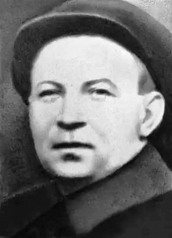

Народився 24.11.1899 р. в с. Келеберда на Полтавщині. Після закінчення гімназії у Кобеляках у 1917 р. М. Лебідь переїхав до Києва і спробував вступити до Української школи військових старшин, але це йому не вдалося. Відтак улаштувався на роботу у видавництві "Криниця". У 1923-му повернувся до Полтави й очолив український театр, працював інструктором повітового відділу освіти у м. Кобеляки, бібліотечним працівником у Дніпропетровську, з 1928-го – директором Будинку літераторів у Харкові. Працював також у видавництві "Мистецтво", був секретарем полтавської філії "Плуга".
Поезії друкував з 1923 р. у часописах "Селянська правда", "Червоний Шлях", "Зоря", "Всесвіт", "Плужанин" та ін.
23.06.1934 р. М. Лебедя заарештували у Харкові, а 23.12 засудили на п'ять років. Відбував покарання у м. Чиб'ю в Ухтпечлазі НКВС. 23.11.1937 р. його судили вдруге: "Приговорен: тройка при УНКВД Архангельской обл. 16.12.1937, обв.: по ст. 58–10 УК РСФСР. Приговор: ВМН. Расстрелян 19.01.1938 р. Место захоронения – Новая Ухтарка".